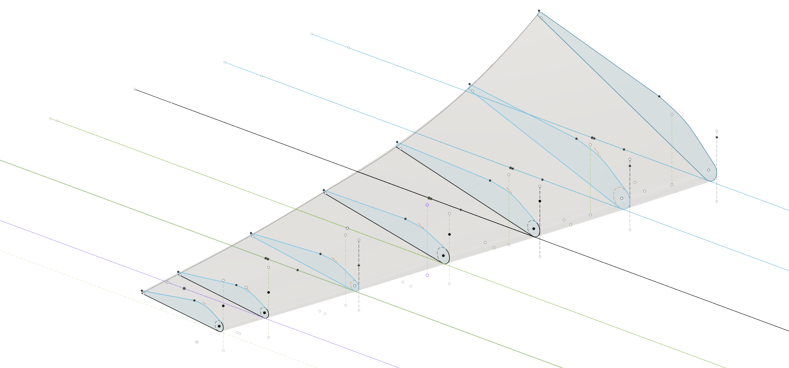

CAD design of a wind turbine wing
Designing a wind turbine wing with optimized aerodynamic properties and structural integrity.
Work focuses on clean dimensions, practical wall thickness, and smooth revision cycles.